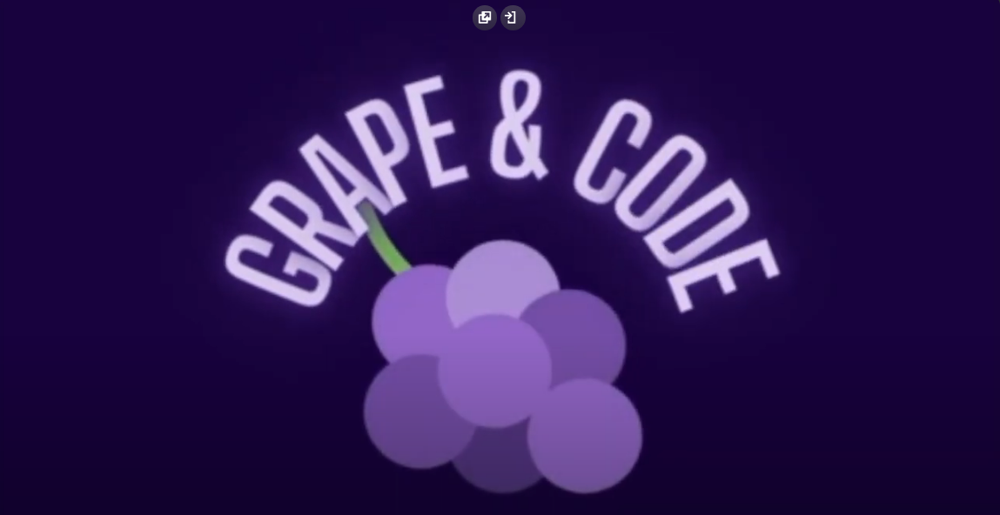

Sobre mim
Tenho como objetivo aprender como funciona a área de TI,assim evoluindo na parte profissional e pessoal, deste modo podendo contribuir para a evolução da empresa em que me encontro
Projetos
-
RoboCup
No primeiro ano da faculdade, conseguimos passar para o evento anual da Fiap com o nosso projeto de um robô usando linguagem C, onde o nosso time conseguiu ganhar a melhor média de notas nas documentações do projeto.
-
Kraft Heinz
No segundo ano da faculdade, desenvolvemos um projeto de filtragem de dados usando o Oracle SQL, Java, HTML, CSS e Power BI